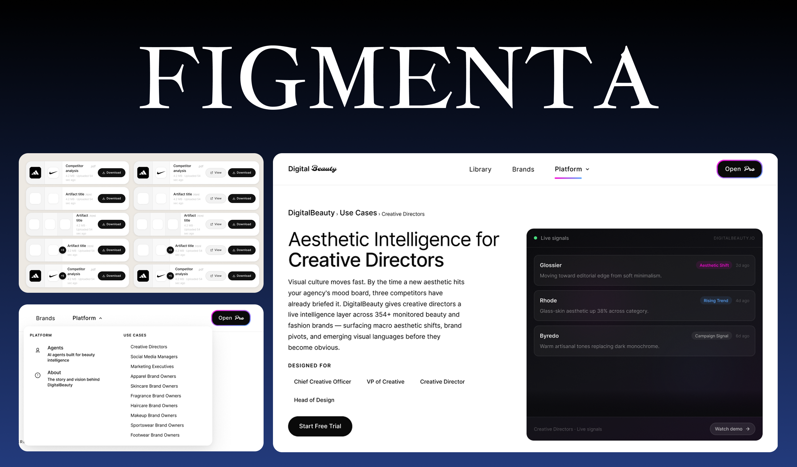
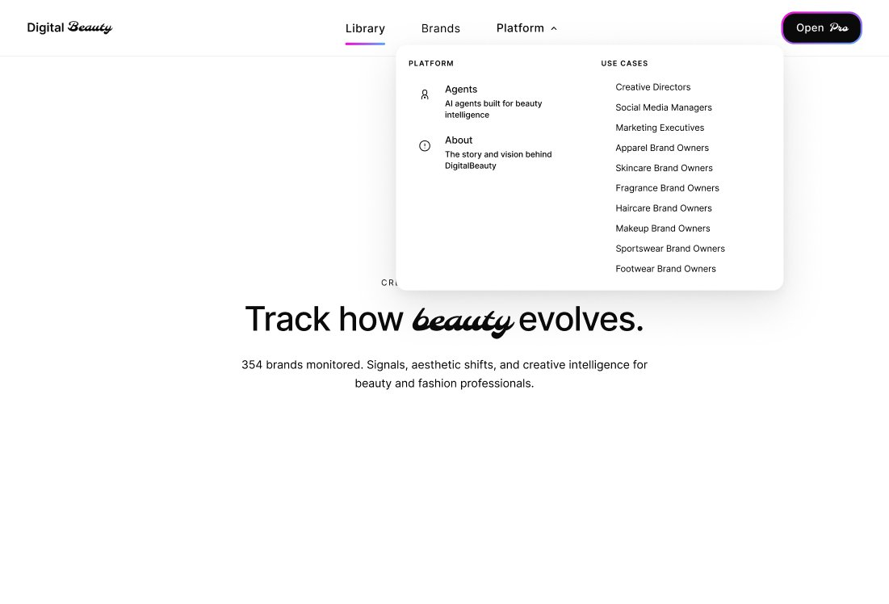
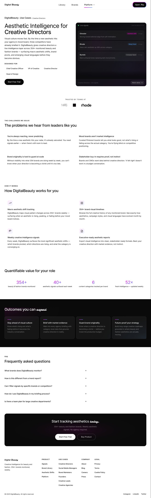
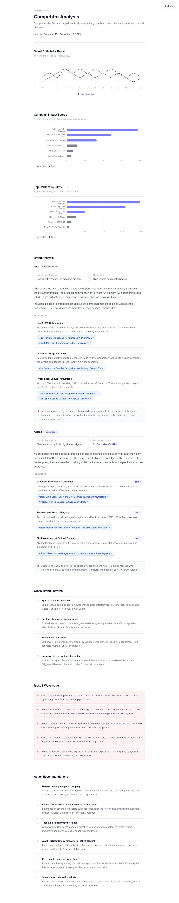
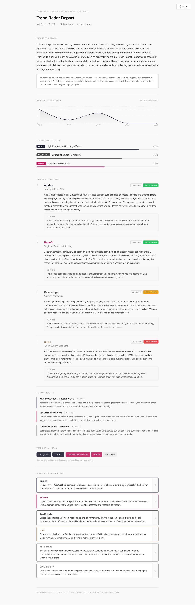
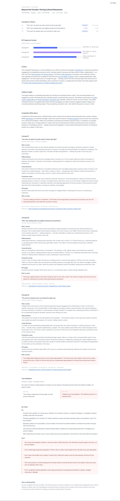
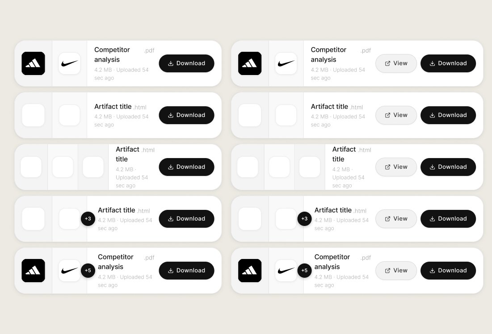

DigitalBeauty — designing creative intelligence for beauty & fashion

The intelligence existed. The output didn't sell it.
Figmenta is building DigitalBeauty — a creative intelligence platform for the beauty and fashion industry. Instead of gut instinct and mood boards, brand teams get live aesthetic signals and AI-generated analysis across 354+ monitored brands, updated weekly.
The product runs on three AI agents — Competitor Analysis, Trend Radar, and Creative Brief. When I joined, the intelligence layer was already working. But the outputs looked like raw data extracts, and the marketing surface didn't communicate who the product was for. The job was to fix both.
"How might we make AI-generated intelligence feel trustworthy enough for a brand team to forward in a strategy meeting — and build a product surface that speaks to nine different personas without losing coherence?"
Three workstreams, one month
The internship covered the full surface of the product — from how prospects discover it, to what they pay for once inside, to how the value leaves the platform.
Speaking to nine personas without sprawl
DigitalBeauty isn't a single-persona product. A Creative Director cares about aesthetic shift tracking. A Brand Owner cares about knowing when a competitor's visual direction is becoming a cliché. A Social Media Manager cares about content signal volume. Same product, nine entry points.
The architecture needed to give each persona their own landing surface without the navbar collapsing into a wall of links. The solution: a Platform mega-menu that organises product areas on one side and audience types on the other — every persona reachable in two clicks from any page.
Each persona page then had to answer one question in different language: why does this matter to me specifically?
The hero — Molle script "beauty" carries the brand voice without leaning on imagery.

The mega-menu — product surface on the left, nine audience entry points on the right.

The full use case page — Problem → How it works → Quantified value → Outcomes → FAQ → CTA.
Making AI output read like a strategy document
The three AI agents already worked. They produced accurate, structured intelligence. But the outputs landed as wall-of-text reports with embedded data — the kind of thing a user skims once and doesn't return to.
The credibility problem with AI-generated content is subtle. When users know an algorithm wrote something, they unconsciously look for reasons to dismiss it. The design has to work against that instinct. Hierarchy, restraint, and consistent structure all signal "this was authored, not auto-generated" — even when it was.
Four design decisions held the system together across all three report types:
Each agent has its own report structure tuned to the work it supports — competitive intelligence reads differently than a creative brief — but they share the same skeleton.

A 14-day competitive intelligence window. Signal activity, campaign impact scores, top content, then per-brand analysis and cross-brand patterns.

A 26-day window across up to four tracked brands. Opens with executive summary, then volume trends, identified trends with confidence tags, and hashtag signals.

The most complex output — three developed creative concepts with visual direction, production notes, KPI targets, risk flags, plus tone guidelines.
The button that was missing
Before this work, the AI reports were viewable inside the platform — but there was no way to get them out. No download, no share link. For a product whose value proposition is intelligence you take into a meeting, that gap mattered more than it looked.
The interaction itself isn't novel. What needed solving was the variability — a single download component had to handle one brand or five, .pdf or .html, single attachment or stacked. Without any of that visual variability creating noise inside the report itself.

Single brand, stacked multi-brand, +N overflow, and View + Download variants — same skeleton, different content density.
What shipped
All three workstreams — use case flow, report artifacts, and download system — went through iteration cycles, were approved, and are live on the DigitalBeauty platform.
The most useful thing I took away wasn't a visual technique — it was learning to design for AI-generated content. Where the information is dynamic and the designer's job is to build a container that makes any output feel credible, structured, and worth acting on. The container is the trust signal.
All designs from this internship were approved by the Figmenta team and are currently published on the DigitalBeauty product surface.